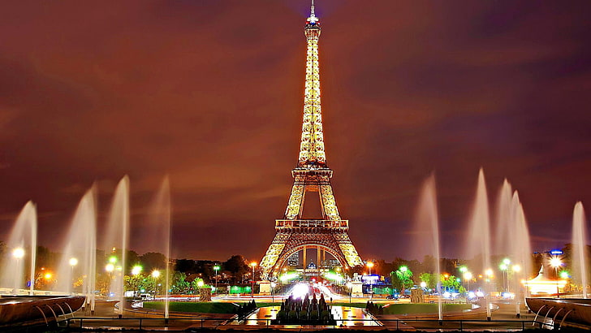

Paris
 Paris, city and capital of France, situated in the north-central part of the country. People were living on the site of the present-day city, located along the Seine River some 233 miles (375 km) upstream from the river’s mouth on the English Channel (La Manche), by about 7600 BCE. The modern city has spread from the island (the Île de la Cité) and far beyond both banks of the Seine.
Paris occupies a central position in the rich agricultural region known as the Paris Basin, and it constitutes one of eight départements of the Île-de-France administrative region. It is by far the country’s most important centre of commerce and culture. Area city, 41 square miles (105 square km); metropolitan area, 890 square miles (2,300 square km). Pop. (2020 est.) city, 2,145,906; (2020 est.) urban agglomeration, 10,858,874.
| Main Language | Currency | More Info |
|---|---|---|
| French | Euro € | Wiki |